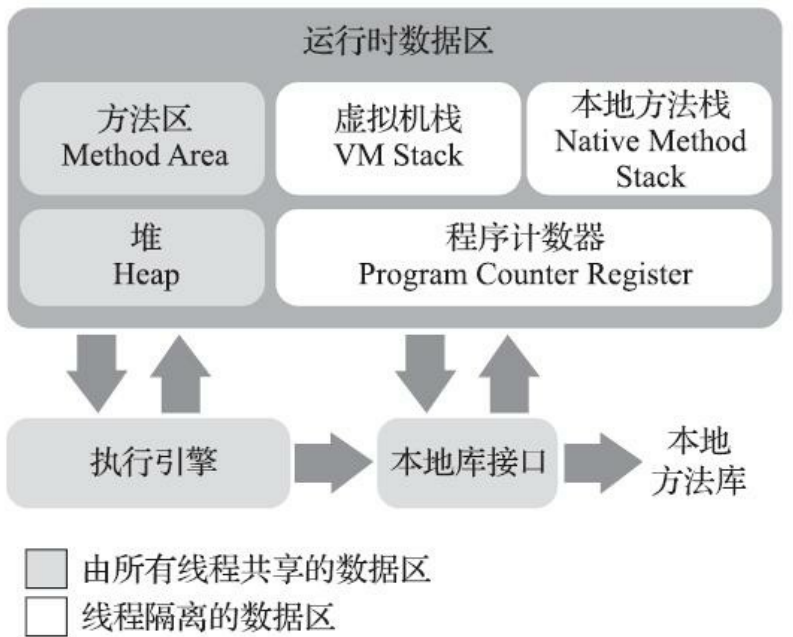
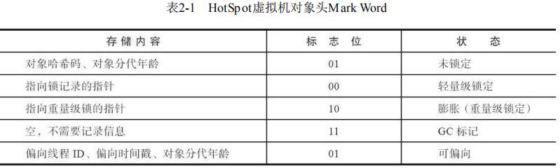
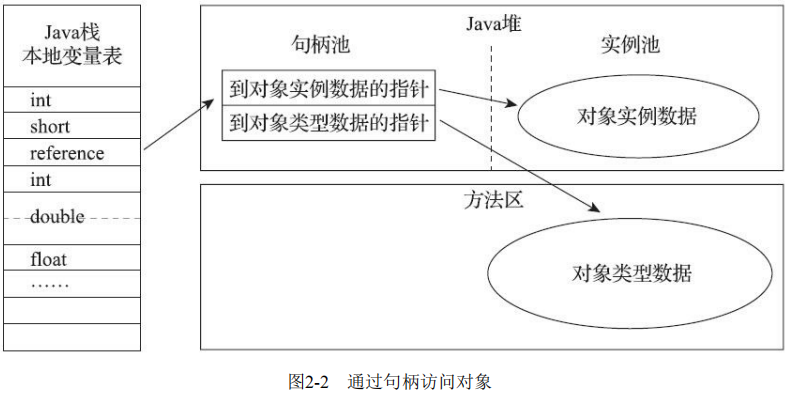
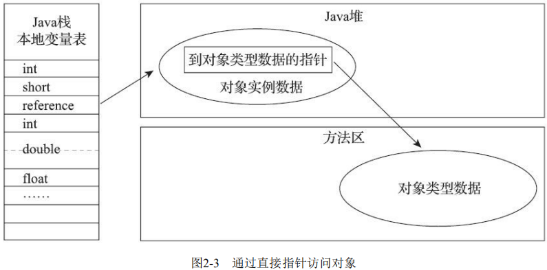

Java内存区域与内存溢出异常
一、运行时的数据区域

1. 程序计数器
- 程序计数器是一块较小的内存空间,它可以看作是当前线程所执行的字节码的行号指示器。
- 它是程序控制流的指示器,分支,循环,跳转,异常处理,线程恢复等基础功能都需要依赖这个计数器来完成。
- 每条线程都需要有一个独立的程序计数器,各条线程之间计数器互不影响,独立存储,我们称这类内存区域为线程私有的内存。
2. Java虚拟机栈
- Java虚拟机栈也是线程私有的,它的生命周期与线程相同。
- 虚拟机栈描述的是Java方法执行的线程内存模型：每个方法被执行的时候,Java虚拟机都会同步创建一个栈帧用于存储局部变量表,操作数栈,动态连接,方法出口等信息。
- 局部变量表存放了编译期可知的各种Java虚拟机基本数据类型,对象引用和returnAddress 类型(指向了一条字节码指令的地址)。
- 这些数据类型在局部变量表中的存储空间以局部变量槽来表示,其中64位长度的long和 double类型的数据会占用两个变量槽,其余的数据类型只占用一个。
- 局部变量表所需的内存空间在编译期间完成分配,当进入一个方法时,这个方法需要在栈帧中分配多大的（指变量槽的个数）局部变量空间是完全确定的,在方法运行期间不会改变局部变量表的大小。
- 虚拟机真正使用多大的内存空间(譬如按照1个变量槽占用32个比特,64个比特,或者更多)来实现一个变量槽完全由具体的虚拟机实现自行决定。
- 该区域会出现两类异常状况： 如果线程请求的栈深度大于虚拟机所允许的深度,将抛出StackOverflowError异常；如果Java虚拟机栈容量可以动态扩展,当栈扩展时无法申请到足够的内存会抛出OutOfMemoryError异常。
3. 本地方法栈
本地方法栈的Java虚拟机栈实现的功能类似，只不过本地方法栈则是为虚拟机使用到的本地(Native) 方法服务的，本地方法栈中方法使用的语言,使用方式与数据结构并没有任何强制规定,因此具体的虚拟机可以根据需要自由实现它。
4. Java堆
- 对于Java应用程序来说,Java堆是虚拟机所管理的内存中最大的一块，又称为GC堆（Garbage Collected Heap）。
- 它是线程共享的，在虚拟机启动时创建，只能存放对象实例。
- 从分配内存的角度看,所有线程共享的Java堆中可以划分出多个线程私有的分配缓冲区 (Thread Local Allocation Buffer,TLAB),以提升对象分配时的效率。
- Java堆可以物理不连续但必须逻辑连续，可被实现为固定大小也可以是扩展的，若在Java堆中没有内存完成实例分配,并且堆也无法再 扩展时,Java虚拟机将会抛出OutOfMemoryError异常。
5. 方法区
- 方法区是线程共享的，用于存储已被虚拟机加载的类型信息,常量,静态变量,即时编译器编译后的代码缓存等数据。
- 方法区不需要连续的内存，可以选择固定大小或者可扩展,甚至还可以选择不实现垃圾收集。
- 对该区域的垃圾收集目标主要是针对常量池的回收和对类型的卸载，若对此区域未完全回收则会导致内存泄漏。
- 如果方法区无法满足新的内存分配需求时,将抛出OutOfMemoryError异常。
6. 运行时常量池
- Class文件中除了有类的版本,字段,方法,接口等描述信息外,还有一项信息是常量池表,用于存放编译期生成的各种字面量与符号引用,这部分内容将在类加载后存放到方法区的运行时常量池中。
- 除了保存Class文件中描述的符号引用外,还会把由符号引用翻译出来的直接引用也存储在运行时常量池中。
- 运行时常量池具备动态性，即不要求常量一定只有编译期才能产生,运行期间也可以将新的常量放入池中。
二、直接内存
- NIO(New Input/Output)类是一种基于通道与缓冲区的I/O方式,它可以使用Native函数库直接分配堆外内存,然后通过一个存储在Java堆里面的 DirectByteBuffer 对象作为这块内存的引用进行操作。
- 本机直接内存的分配不会受到Java堆大小的限制，但仍然受本机总内存大小以及处理器寻址空间的限制，当各个内存区域总和大于物理内存限制(包括物理的和操作系统级的限制),从而导致动态扩展时出现 OutOfMemoryError异常。
三、HotSpot虚拟机对象探秘
1. 对象的创建
- 当Java虚拟机遇到一条字节码new指令时，首先检查该指令参数是否能在常量池中定位到一个类的符号引用，并检查其代表的类是否已被加载,解析和初始化过，如果没有,那必须先执行相应的类加载过程。
- 类加载检查通过后,虚拟机将为新生对象分配内存（大小在类加载完后即可完全确定）:
指针碰撞方式：假设Java堆中内存是绝对规整的，就把分界点指示器指针向空闲空间方向挪动一段与对象大小相等的距离。
空闲列表方式：假设使用的内存和空闲的内存相互交错在一起,则虚拟机就维护一个列表,记录哪些内存块是可用的,在分配的时候从列表中找到一块足够大的空间划分给对象实例,并更新列表记录。
使用哪种方式取决于Java堆所采用的垃圾收集器是否带有空间压缩整理的能力
3. 内存分配必须保证原子性：
比较并替换（Compare and substitute，CAS）加上失败重试的方式
本地线程分配缓冲(线程本地分配缓冲区，TLAB)：为每个线程在Java堆中预先分配一小块内存TLAB, 则在需要内存时直接在线程的本地缓冲中分配，只有当本地缓冲区用完了才需要同步锁定来安全分配内存。
- 内存分配完成之后,虚拟机必须将分配到的内存空间(但不包括对象头)都初始化为零值，以保证对象的实例字段在Java代码中可以不赋初始值就直接使用。
- 最后虚拟机在对象头中设置一些必要信息，如这个对象是哪个类的实例,如何才能找到类的元数据信息,对象的哈希码(实际上对象的哈希码会延后到真正调用Object::hashCode()方法时才计算),对象的GC分代年龄等信息.
- 至此从虚拟机的视角来看,一个新的对象已经产生了，但从Java程序的视角看来,还需要再执行
<init>()方法后对象才算构造完成。
2. 对象的内存布局
对象在堆内存中的存储布局包括三个部分：对象头、实例数据和对齐填充。
2.1 对象头
- 用于存储对象自身的运行时数据Mark Word：哈希码,GC分代年龄,锁状态标志,线程持有的锁,偏向线程ID,偏向时间戳,32bit或64bit;
- 类型指针:对象指向它的类型元数据的指针,Java虚拟机通过这个指针来确定该对象是哪个类的实例,并非所有的虚拟机实现都必须在对象数据上保留类型指针,因为查找对象的元数据信息并不一定要经过对象本身。
- 如果对象是一个Java数组,那在对象头中还必须有一块用于记录数组长度的数据。

2.2 实例数据
- 实例数据部分是对象真正存储的有效信息,无论是从父类继承下来的,还是在子类中定义的字段都必须记录起来。
- 存储顺序受到虚拟机分配策略参数(-XX：FieldsAllocationStyle参数，默认为true)和字段在Java源码中定义顺序的影响。
- HotSpot虚拟机默认的分配顺序为longs/doubles、ints、shorts/chars、bytes/booleans、oops(Ordinary对象指针，OOP),即相同宽度的字段总是被分配到一起存 放,在此前提下,在父类中定义的变量会出现在子类之前。
- 如果HotSpot虚拟机的 +XX：CompactFields参数值为true(默认就为true),那子类之中较窄的变量也允许插入父类变量的空隙之中,以节省出一点点空间。
2.3 对齐填充
由于HotSpot虚拟机的自动内存管理系统要求对象起始地址必须是8字节的整数倍，即任何对象的大小都必须是8字节的整数倍，而对象头部分已经被精心设计成正好是8字节的倍数,因此,如果对象实例数据部分没有对齐的话,就需要通过对齐填充来补全。
3. 对象的访问定位
创建完对象后Java程序会通过栈上的reference数据来操作堆上的具体对象。主流的访问方式主要有使用句柄和直接指针两种。
3.1 句柄访问
- reference中存储的是对象的句柄地址,而句柄中包含了对象实例数据与类型数据各自具体的地址信息。
- 使用句柄访问对象的优点是reference中存储的是稳定句柄地址,在对象被移动(垃圾收集时移动对象是非常普遍的行为)时只会改变句柄中的实例数据指针而无需修改reference。

3.2 直接指针访问
- reference中存储的直接就是对象地址,Java堆中对象的内存布局还必须考虑如何放置访问类型数据的相关信息。
- 最大的好处就是速度更快,它节省了一次指针定位的时间开销。
- 虚拟机HotSpot主要使用直接指针方式进行对象访问。

四、 实战：OutOfMemoryError异常
- 通过实战可验证运行时数据区域存储的内容。
- 当遇到实际的内存溢出异常时,能根据异常的提示信息迅速得知是哪个区域的内存溢出,溢出的原因以及相应的处理方法。
1. Java堆溢出
1.1 溢出原因
IDEA中设置虚拟机参数:
run->Edit Configurations->VM options:-Xms20m -Xmx20m -XX:+HeapDumpOnOutOfMemoryError；限制Java堆的大小为20MB,不可扩展(将堆的最小值-Xms参数与最大值-Xmx参数 设置为一样即可避免堆自动扩展);
通过参数-XX：+HeapDumpOnOutOfMemoryError可以让虚拟机在出现内存溢出异常的时候Dump出当前的内存堆转储快照以便进行事后分析。不断创建对象并避免垃圾收集机制清除这些对象，当触及设定的最大堆容量限制后就会产生内存溢出异常。
控制台错误输出信息：
1
2
3java.lang.OutOfMemoryError: Java heap space
Dumping heap to java_pid13516.hprof ...
Heap dump file created [28164792 bytes in 0.104 secs]1
2
3while (true) {
list.add(new OOMObject());
}
1.2 分析和解决的方法
- 使用内存映像分析工具（IDEA可以使用插件viaualvm分析）对Dump出来的堆转储快照进行分析，查看是出现了内存泄漏还是内存溢出。
- 若为内存泄漏，则利用工具根据泄漏对象的类型信息以及它到GC Roots引用链的信息比较准确地定位到这些对象创建的位置,进而找出产生内存泄漏的代码的具体位置。
- 若为内存溢出(比如申请了一个integer,但给它存了long才能存下的数)，则应适当调整Java虚拟机的堆参数大小，然后检查代码中是否存在某些对象生命周期过长,持有状态时间过长,存储结构设计不合理等情况。
2 虚拟机栈和本地方法栈溢出
- 使用
-Xss128K参数减少栈内存容量或定义大量的本地变量,增大此方法帧中本地变量表的长度. - 无论是由于栈帧太大还是虚拟机栈容量太小,当新的栈帧内存无法分配的时候, HotSpot虚拟机抛出的都是StackOverflowError异常，因为HotSpot是不允许动态扩展栈容量大小的虚拟机。
1
2
3
4
5private int stackLength = 1;
public void stackLeak() {
stackLength++;
stackLeak();
}
3. 方法区和运行时常量池溢出
3.1 运行时常量池溢出
- 设置参数
-XX:PermSize=6M -XX:MaxPermSize=6M来限制永久代的大小以间接限制其中常量池的容量。 - 在jdk6中String.intern()方法会把首次遇到的字符串实例复制到永久代的字符串常量池中存储,返回的也是永久代里面这个字符串实例的引用
- 在jdk7中原本存放在永久代的字符串常量池被移至Java堆之中，故intern()方法只需要在常量池里记录一下首次出现的实例引用即可。
- 注意！字符串”java”在加载sun.misc.Version这个类的时候就进入常量池的,因此不属于第一次出现。
- 在JDK8以后,永久代便完全退出了历史舞台,元空间作为其替代者登场。
1
2
3
4
5
6
7
8
9
10
11
12
13
14
15
16//// 使用Set保持着常量池引用，避免Full GC回收常量池行为
//jdk6中会产生溢出，jdk7中不会溢出
Set<String> set = new HashSet<String>();
// 在short范围内足以让6MB的PermSize产生OOM了
short i = 0;
while (true) {
set.add(String.valueOf(i++).intern());
}
//String.intern()返回引用的测试
//在jdk6中将返回2个flase，而在jdk7及以上则得到一个true和一个flase
String str1 = new StringBuilder("计算机").append("软件").toString();
System.out.println(str1.intern() == str1);
String str2 = new StringBuilder("ja").append("va").toString();
System.out.println(str2.intern() == str2);
3.2 方法区溢出
- 若在运行时产生的大量的类填满了方法区，方法区就会产生溢出，当前流行的很多主流框架如Spring，Hibernate在对类进行增强时(用到了CGLib这类字节码技术)就很容易溢出。
- 很多运行于Java虚拟机上的动态语言(例如Groovy等)通常都会持续创建新类型来支撑语言的动态性, 因此也容易出现方法区溢出场景。
- 大量JSP或动态产生JSP文件的应用(JSP第一次运行时需要编译为Java类),基于OSGi的应用(即使是同一个类文件,被不同的加载器加载也会视为不同的类)等也容易产生方法区的溢出。
设置虚拟机参数的解决方法：
-XX: MaxMetaspaceSize:设置元空间最大值,默认是-1,即不限制,或者说只受限于本地内存大小;-XX: MetaspaceSize:指定元空间的初始空间大小,以字节为单位,达到该值就会触发垃圾收集进行类型卸载,同时垃圾收集器会对根据垃圾收集情况对该值进行自适应调整；-XX: MinMetaspaceFreeRatio:作用是在垃圾收集之后控制最小的元空间剩余容量的百分比,可减少因为元空间不足导致的垃圾收集的频率。-XX: Max-MetaspaceFreeRatio:用于控制最 大的元空间剩余容量的百分比。
4. 本机直接内存溢出
- 由直接内存导致的内存溢出,一个明显的特征是在Heap Dump文件中不会看见有什么明显的异常情况,如果读者发现内存溢出之后产生的Dump文件很小,而程序中又直接或间接使用了 DirectMemory(典型的间接使用就是NIO类)。
- 使用DirectByteBuffer分配内存也会抛出内存溢出异常,但它抛出异常时并没有真正向操作系统申请分配内存,而是通过计算得知内存无法分配就会在代码里手动抛出溢出异常,真正申请分配内存的方法是Unsafe::allocateMemory()。
- 直接内存(Direct Memory)的容量大小可通过
-XX：MaxDirectMemorySize参数来指定,如果不去指定,则默认与Java堆最大值(由-Xmx指定)一致。1
2
3
4
5
6Field unsafeField = Unsafe.class.getDeclaredFields()[0];
unsafeField.setAccessible(true);
Unsafe unsafe = (Unsafe) unsafeField.get(null);
while (true) {
unsafe.allocateMemory(_1MB);
}